Consider a nonlinear system of the following form
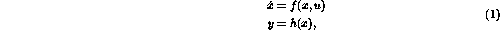
where
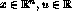
, and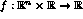
and are continuous functions with f(0,0)=0 and h(0)=0. Since we are interested in whether a system can be stabilized by switching between different controllers we introduce a set of so called basic controllers of the formwhere
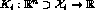
is continuous,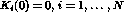
, and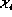
is closed. To determine when to use a basic controller we also introduce a switching function I(x) which maps the set of state measurements into the set of integers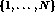
. Hence, the switching function induces a partition of the state space with different enumerated components. We use the following notation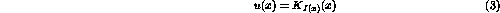
for the control law obtained by choosing basic controller with respect to the switching function I. In the sequel we assume that (1) is controlled by the basic controllers (2) with respect to the switching function I. Such systems may arise in cases when the controller consists of a number of relay nonlinearities which can be used to change the structure of the system (1).
Notice that the right hand side of the closed loop system
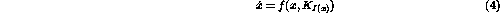
is bounded as long as the state belongs to some compact subset of
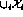
. Hence, is bounded on .Sometimes it can be desired to implement a switching controller using some hysteresis elements, for example to avoid sliding modes. Observe that this kind of controllers cannot be described by a switching function since the hysteresis element introduce a discrete state. We will use the term switching rule to distinguish these cases.
Here we state a number of definitions and results that we need for investigating stability and stabilizability of switched systems, see for example [8, 9].
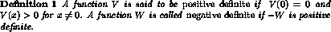
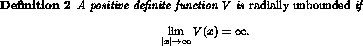
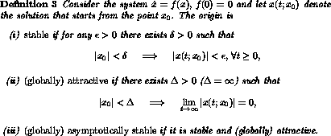
If the origin is asymptotically stable it has a region of attraction, i.e., a set of initial states such that
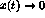
for all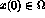
.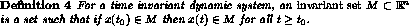
Note that sometimes the term positively invariant is used to describe the above property. However, we do not adopt that terminology here.
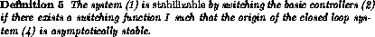
The main problem we consider in this report is:
What are the conditions for existence and how is it possible to design a (globally) stabilizing switching controller (3)?Much of the stability analysis of smooth systems can be generalized to nonsmooth systems.